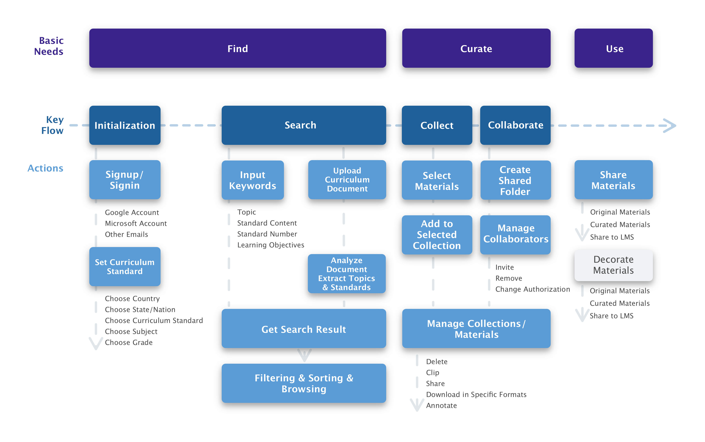
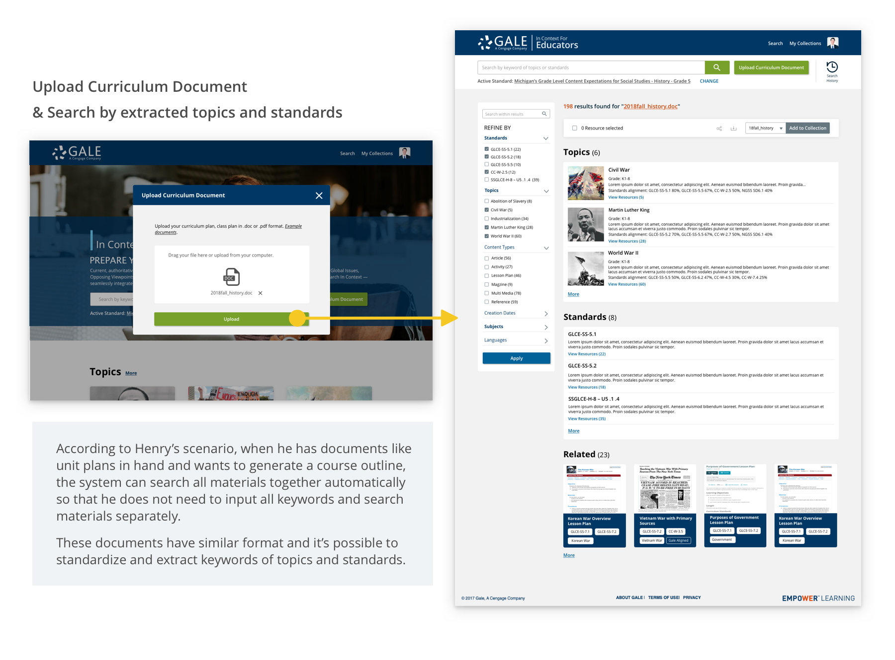
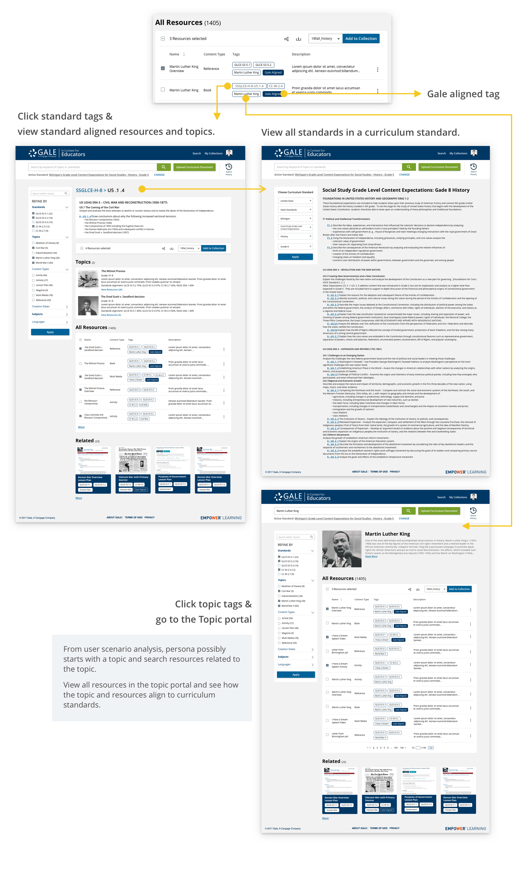
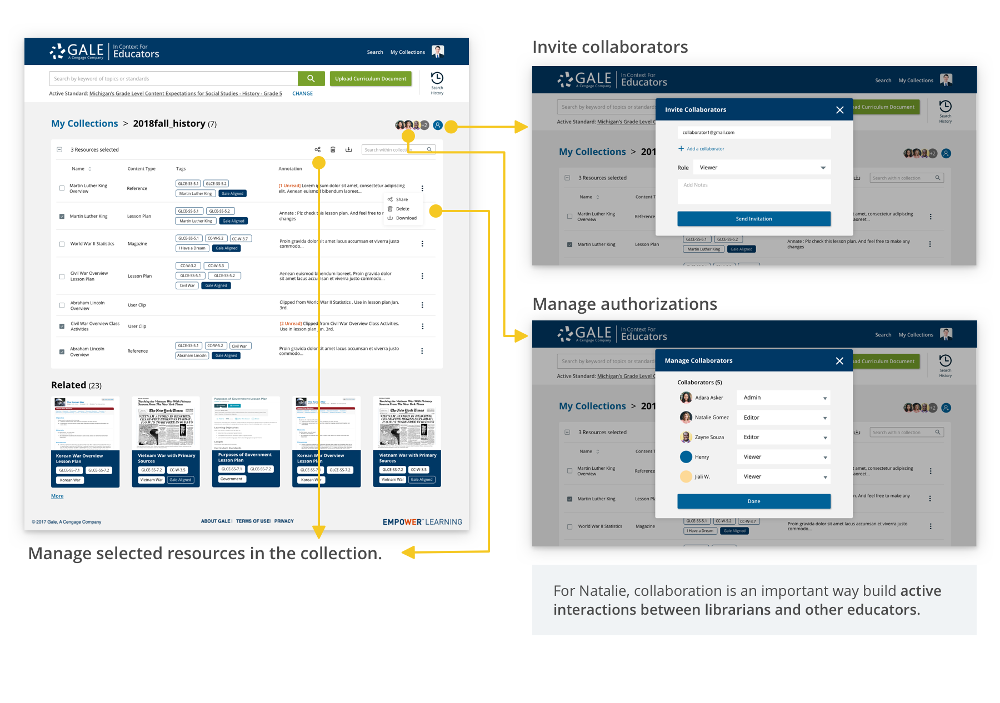

In Context for Educators is a new Gale product specifically for K-12 educators, which meets their needs in finding, curating and using curriculum standard based and personalized materials with existing curriculum standards, topics and curriculum plans.
2018 Summer UX Intern @ Gale, Cengage Learning | Mentor: Thomas (Senior UX Designer) | Duration: June, 2018 - Aug, 2018 | Tools: Axure, Sketch

While preparing teaching materials and classes, K-12 educators have several needs, and the three major needs are:
Currently there is no product which fully covers all these needs, so the preparing process requires a lot of manual effort. As one of the biggest content provider in the US, it's an opportunity for Gale, Cengage Learning to provide an ecosystem with rich content where educators can prepare all their curriculum standards aligned materials.
This need is not highlighted in the concept, because the first two features have been realized in current Gale products which can be easily integrated into the design. And the add-on feature is out of the current product scope.
Persona Mapping
After analyzing research results, we categorized and listed all user needs and created 12 personae for major needs. In order to prioritize user needs, in the meanwhile, define the scope of product and make sure it is sell-able and technical feasible, we conducted a persona mapping session with VP, PM, tech lead, sales, marketing, and specialists.

Roles and Goals Matrix
After persona mapping, I created a roles and goals matrix with hierarchic goals and the 6 selected personae. The weight of each goal was different because of the importance of each persona. Overlapping goals and special goals for some personae can be obvious in the matrix. Through the matrix, I got the priority of goals, which are important to our product.

Roles and goals matrix.
User Scenario
For each selected persona, we analyzed the user scenarios based on different "variables".
All user Scenarios
Using our primary persona, Henry, as an example, to achieve the same goal - finding replacement materials, there are three major scenarios based on materials in hand and objectives.

Workflow
Based on the scenarios and important goals we got, we found there are several possible user paths. We together designed several variations and integrated into two concepts. I'll focus on the concept I was responsible for.
Main Workflow
challenge 1
1. Setting active curriculum standards

2. Upload curriculum document
3. Standard and topic tags showing relevance
challenge 2
1. Create collections

2. Manage materials and collaborators
challenge 3
It's a little pity that I cannot follow the project from ideation to launch, but I really appreciate the opportunity to design for real-industry problems which are quite challenging but exciting. There are some constraints for this project which I may not be able to meet in a course project. For example, we usually will not release sudden changes during midterm to avoid training costs for our customers, and all the copyright issue behind the sharing feature in our products.
We spent almost two months analyzing research results, creating our personae and defining the scope of product. And involved people from other groups in several important meetings to get everyone on the same page, decide the overall project time-line, technical feasibility, and so on. And I learned to create personae based on rich research results and map personae taking suggestions from different perspectives.


Research Analysis, Personae Creation, Workflow Analysis, Workflow and Sketch